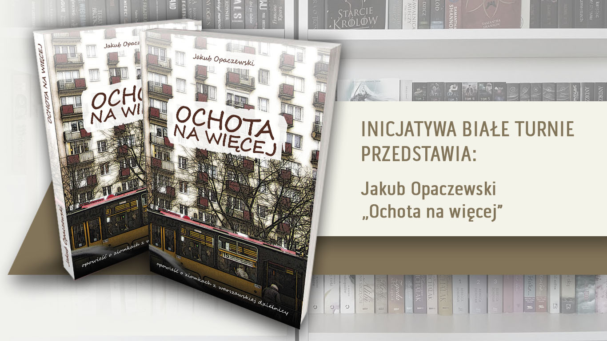

Warszawa. Wielu jej nie znosi. Poniekąd pewnie mają – albo miewają – rację. To nic. Tu żyjemy my. To nasze miasto. Nie wyobrażamy sobie życia nigdzie indziej. Jeżeli Ty także właśnie tutaj chcesz kochać i wierzyć, śmiać się i walczyć, upadać i powstawać, grać w piłkę albo na skrzypcach – to ta książka jest dla Ciebie. Niech stanie się Twoim przyjacielem... albo przynajmniej ziomkiem z Ochoty.
Inicjatywa Białe Turnie przedstawia:
Jakub Opaczewski
„Ochota na więcej”
zamówienia:
bialeturnie@onet.pl
tel. 579 806 093
Cena: 35 zł
W Warszawie książkę dostarczamy gratis.
Wrócił przed kilkoma godzinami i jak zawsze po dłuższej nieobecności czuł się jeszcze odurzony Warszawą. Znowu instynktownie dziwił się, że drzewa pod grubą warstwą kurzu mogą być tak intensywnie zielone i że pełne spalin powietrze można wdychać pełną piersią. Robił to też z upodobaniem. Już jakiś czas temu doszedł do przekonania, że w życiu chodzi o to, by móc oddychać pełną piersią i spokojnie spoglądać w błękitne niebo.